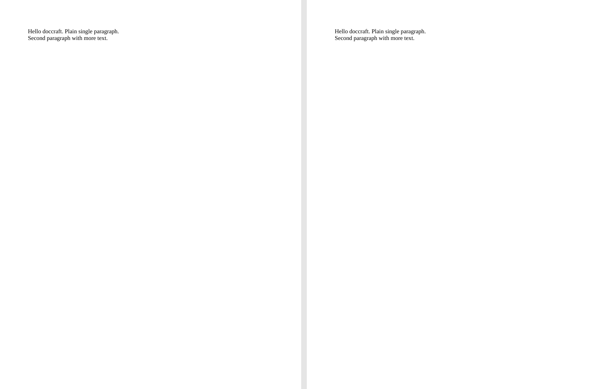
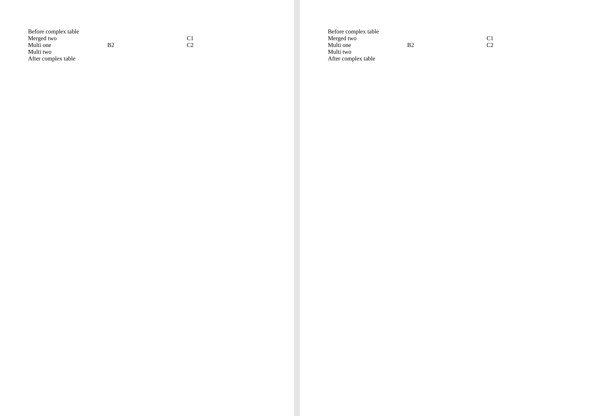
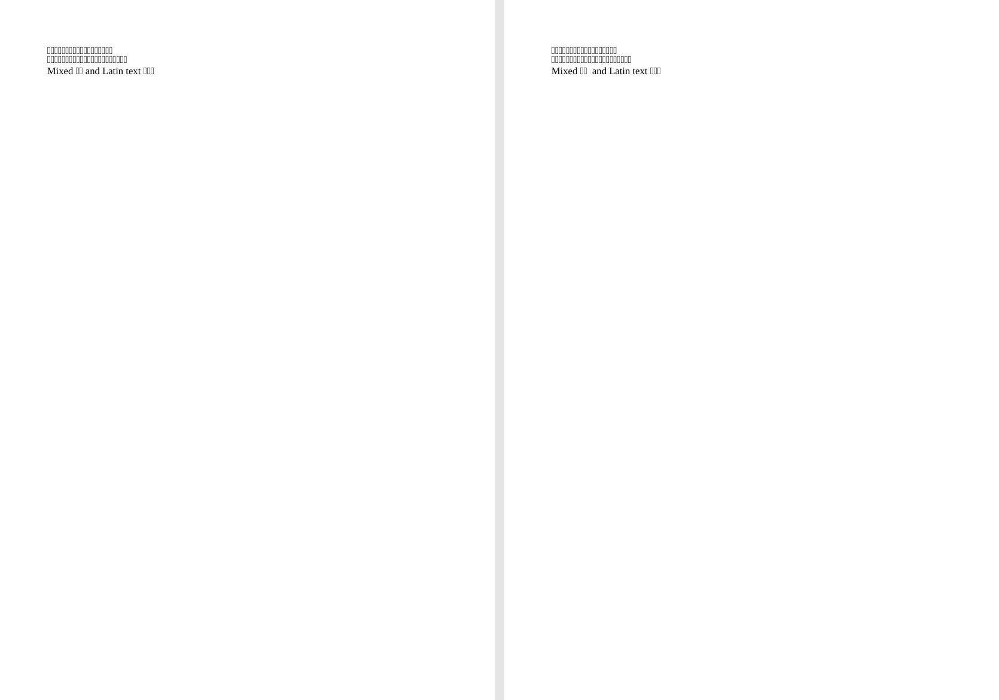
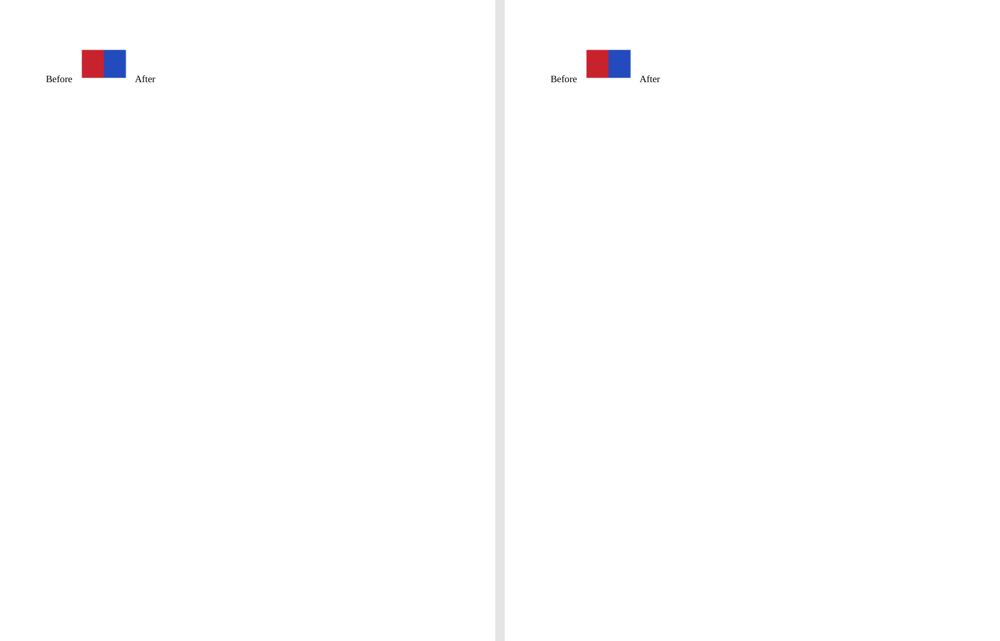
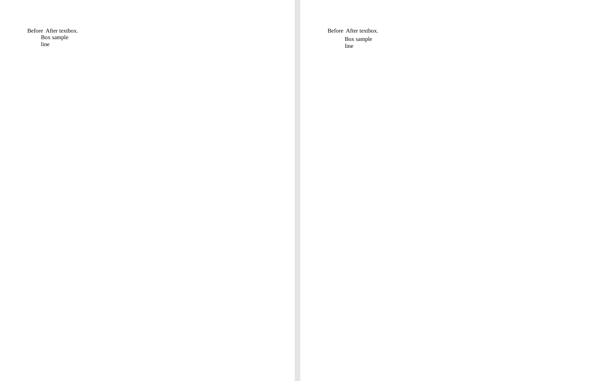
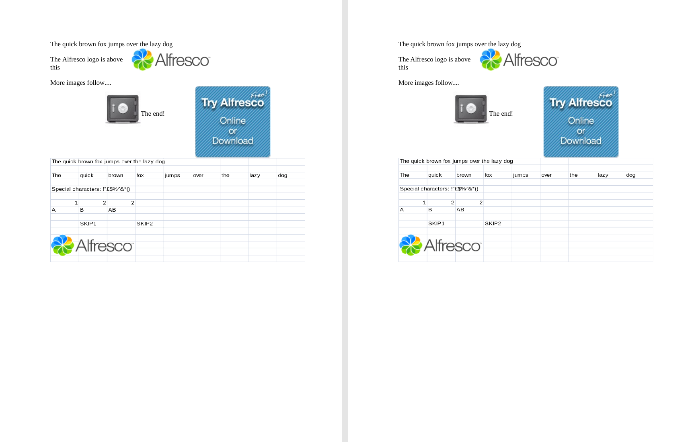
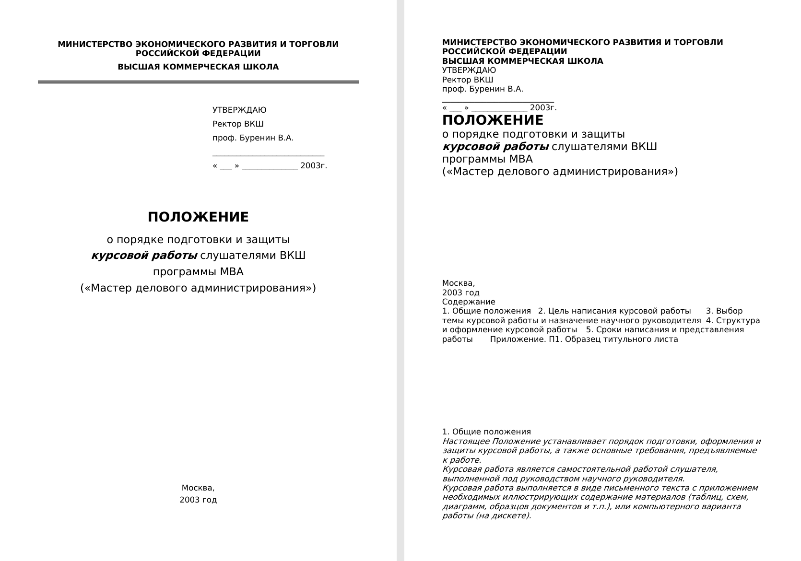

High-fidelity .doc → .docx conversion in C++23, packaged as a single binary
with no third-party runtime dependencies.
doccraft reads Word 97–2003 binary documents and writes ECMA-376 Transitional
DOCX. It runs locally without an Office installation. The converter is at
v0.9.0-rc1 preparation: the main feature paths are implemented, while M6
hardening remains open.
Requires CMake 3.20+, a C++23 compiler, and network access for the first
configure to fetch GoogleTest. The conversion binary itself has no runtime
Office or third-party library requirement.
cmake -B build -DCMAKE_BUILD_TYPE=Release
cmake --build build -j
ctest --test-dir build --output-on-failure
build/src/cli/doccraft convert input.doc -o output.docx
build/src/cli/doccraft convert protected.doc --password secret -o output.docx
build/src/cli/doccraft inspect input.docThe conversion core (src/base, src/cfb, src/doc, src/model, src/docx)
is standard C++23 plus vendored miniz and pugixml, and calls no operating
system service. Only two places are platform-specific: src/cli (files and
stdio) and the ANSI code-page decoder in src/base/charset.cc. Targets without
a command line use the C API in src/api/doccraft_api.h:
one .doc buffer in, one .docx buffer out.
| Target | Artifact | ANSI code pages | Verified |
|---|---|---|---|
| Linux | CLI + libraries | iconv (glibc) | built and tested in CI |
| macOS | CLI + libraries | iconv (libSystem) | built and tested in CI |
| Windows | CLI + libraries | MultiByteToWideChar | built and tested in CI (MSVC, warnings-as-errors off) |
| Android (NDK) | libraries + C API | iconv (bionic), else CP1252 only | CMake options in place, toolchain not run here |
| iOS | libraries + C API | iconv (libSystem), else CP1252 only | CMake options in place, toolchain not run here |
| WebAssembly | libraries + C API | CP1252 only | library-only build verified on Linux, emsdk not run here |
Build the library and C API only (the shape the embedded targets use):
cmake -B build-lib -DCMAKE_BUILD_TYPE=Release \
-DDOCCRAFT_BUILD_CLI=OFF -DDOCCRAFT_BUILD_TESTS=OFF
cmake --build build-lib -jWebAssembly, Android and iOS cross builds use the same two options with the
toolchain on the command line:
# WebAssembly (needs emsdk on PATH)
emcmake cmake -B build-wasm -DDOCCRAFT_BUILD_CLI=OFF -DDOCCRAFT_BUILD_TESTS=OFF
cmake --build build-wasm -j
# Android (the NDK ships its own toolchain file)
cmake -B build-android -DCMAKE_TOOLCHAIN_FILE=$ANDROID_NDK/build/cmake/android.toolchain.cmake \
-DANDROID_ABI=arm64-v8a -DANDROID_PLATFORM=android-21 \
-DDOCCRAFT_BUILD_CLI=OFF -DDOCCRAFT_BUILD_TESTS=OFF
cmake --build build-android -j
# iOS (community toolchain, e.g. ios-cmake 4.x)
cmake -B build-ios -G Xcode \
-DCMAKE_TOOLCHAIN_FILE=ios.toolchain.cmake -DPLATFORM=OS64 \
-DDOCCRAFT_BUILD_CLI=OFF -DDOCCRAFT_BUILD_TESTS=OFF
cmake --build build-ios --config ReleaseBoundaries that matter on those targets:
only entry point. With neither iconv nor MultiByteToWideChar, only CP1252
decodes correctly - doccraft_supports_codepage() reports false for the other
ANSI pages and the converter degrades their text to a CP1252 approximation.
permissions() there only carries the read-only attribute, soinput validation also probes with an open; diagnostics are written in binary
mode so they stay byte-identical to the POSIX builds. The CLI takes narrow
(ANSI code page) paths because that is what argv holds - pass UTF-8 paths on
Windows through the C API instead.
boundary is provided; a JNI wrapper and a Swift package are separate work.
glibc, because its tables are stateful and the decoder is per-character; see
section properties; styles, numbering, headers, footers, and multiple
sections.
footnotes, and endnotes.
boxes, and OLE ObjectPool payloads with field-result previews.
language ID to ANSI code-page mapping. The implementation lists 15 code-page
decoders; non-CP1252 decoding requires iconv at build time.
legacy RC4 and RC4 CryptoAPI decryption with a password, and warnings for
selected recoverable formatting or header damage.
Feature states and their boundaries are in the design checklist
and known simplifications. The applicable sprm
ledger is tracked in SPRM coverage.
The five committed measurements below come from
tests/perf/baseline.json. The benchmark converts
generated structured DOC files five times per size; wall time is the median,
and peak RSS is the maximum of those runs. These are measurements from that
baseline, not cross-machine guarantees.
| Input DOC | Actual size | Median wall time | Peak RSS |
|---|---|---|---|
| 1 MiB tier | 1.00 MiB | 0.037 s | 16.6 MiB |
| 5 MiB tier | 5.00 MiB | 0.180 s | 68.3 MiB |
| 20 MiB tier | 20.00 MiB | 0.905 s | 261.8 MiB |
| 50 MiB tier | 50.24 MiB | 1.111 s | 322.2 MiB |
| 100 MiB tier | 99.99 MiB | 3.990 s | 1,287.9 MiB |
Reproduce with tests/perf/gen_corpus.py and tests/perf/run_perf.py after
building the converter. The 100 MiB result shows that memory use is not yet
bounded; streaming and an explicit memory cap are M6 work.
The pixel comparison pipeline renders the same
source .doc through two LibreOffice paths: source DOC → PDF → PNG, and source
DOC → doccraft DOCX → PDF → PNG. It compares corresponding pages at 150 DPI,
rejecting a page with a size mismatch or at least 0.1% pixels differing by
more than 16 grayscale levels. Page-count exceptions require a sample-specific
.allow file.
At the current baseline, 28 of 33 committed DOC samples pass, four fail,
and one cannot be rendered from the output DOCX by LibreOffice. See the
per-sample record for the version, exceptions, and
failures. Pixel agreement in LibreOffice does not establish identical rendering
in Microsoft Word.
Each image shows source DOC on the left and doccraft DOCX on the right,
both rendered by LibreOffice. These are unretouched first-page captures at
100 DPI; the gallery generator can regenerate or check
their bytes. The fast-saved and OLE examples demonstrate conversion, not a
pixel PASS claim.
| Plain text | Complex table |
|---|---|
 |  |
| CJK text | Inline image |
|---|---|
 |  |
| Floating text box | OLE object |
|---|---|
 |  |
| Fast-saved document, first page |
|---|
 |
Regenerate after building the CLI with python3 tools/gen_gallery.py; verify
the checked-in PNGs with python3 tools/gen_gallery.py --check. This needs
LibreOffice, Poppler's pdftoppm, and Pillow.
CFB container (src/cfb) → DOC parser (src/doc) → neutral IR (src/model)
↓
DOCX writer (src/docx)The four layers pass data in one direction. Shared byte and character decoding
primitives live in src/base; the DOC parser and DOCX writer meet only through
the format-neutral model. See DESIGN for the full layout.
--password for XORobfuscation, legacy RC4/MD5 and RC4 CryptoAPI/SHA-1. Non-ASCII XOR passwords
and interoperability with a Word-produced encrypted sample are still unverified.
shape type, solid fill, line colour/width and available text. Pattern and
gradient fills, rotation, curve geometry and shape text wrap may differ, and
floating image wrap polygons are still rectangular.
without a field-result image use an EMF/WMF or CF_DIB (bitmap) OlePres preview;
\3EPRINT previews and linked-object semantics can remain blank.
legacy tabs are dropped, full legacy table properties, headers/footers and
non-WMF pictures are not converted, and output layout may degrade.
the CFB input in RAM until conversion completes (100 MiB ≈ 1.3 GiB RSS).
namespace; attribute validity, relationship targets and extension-namespace
placement are not verified.
The detailed list is in KNOWN-SIMPLIFICATIONS.
Licensed under Apache-2.0. The parser follows
[[MS-CFB]](https://learn.microsoft.com/en-us/openspecs/windows_protocols/ms-cfb/)
and [[MS-DOC]](https://learn.microsoft.com/en-us/openspecs/office_file_formats/ms-doc/);
the writer targets ECMA-376
Transitional OOXML.